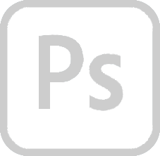
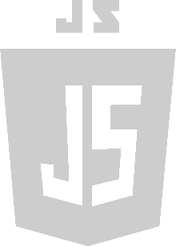
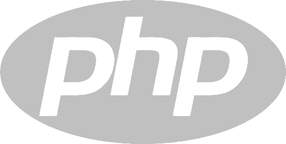

About me...
My Story...
Hi, my name is Rosemary Meyers. I am a trained illustrator.
I have been a graphic designer and production designer
for over ten years in the Greater Philadelphia Area.
In December 2019, I received a Web Design Certificate
from The University of Fine Arts. I achieved an overall
GPA of 4.0.
My Stack...



My Links...

My contact info...
What sets me apart...
I'm an accomplished fine artist. I have been for the majority
of my life. My paintings have been accepted into several
Juried Fine Art Exhibitions in the Philadelphia Area.
Why does this matter...
I paint and draw the human figure from life. This skill helps me
to solve composition and color problems quickly.
In my spare time...
I enjoy plein aire painting, watching movies, reading
and spending time at the beach.